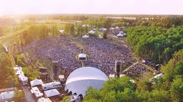

Winnipeg Folk Festival 2027: July 8 to 11, Birds Hill Park

The 52nd Winnipeg Folk Festival runs July 8 to 11, 2027, at Birds Hill Provincial Park, northeast of the city. The festival takes the second weekend of July every year, so those four days were fixed long before a single act was announced, and you can book around them now. What follows is the site the way you actually cross it, from the downtown bus stop to the last set on the Main Stage field.
From the Memorial Boulevard stop to the Main Gate
Winnipeg Transit runs a free Folk Fest Express for the festival, and it is the easiest way in if you are staying in the city. It leaves from the southbound side of Memorial Boulevard between St. Mary Avenue and York Avenue, a few blocks west of the RBC Convention Centre, and every bus on the route is accessible. The ride ends on Festival Drive inside the park.
Going home, the stop is on Festival Drive across the road from the west parking lot, and you have to use the crosswalk to reach it. The last bus pulls out after the Main Stage set finishes. If you need a connecting route once you are back downtown, check the Winnipeg Transit schedule before you count on that last bus; the route you are transferring to may have stopped for the night.
If you drive and you are coming from the west side of the city, the festival directs you into Festival West Parking. Nothing stays overnight in the festival lots.
The tarp shuffle, and what rain does to it
At the Main Gate, people line up along the tree line for a tarp ticket, which is handed out about ten minutes before the gate opens. The shuffle itself begins on the Main Stage field roughly twenty minutes after that, and it settles where you will sit for the rest of the day. Tarps can be no larger than eight feet by ten, and the festival asks that you skip any marker that blocks the view behind you. If the ground is wet the field is roped off and the shuffle moves to 5:30 instead. One patch of grass is exempt: Big Bluestem becomes a dancing area after dark, and no tarps are allowed there.
Up the path to the day stages
From the Main Stage field the path climbs into the trees and the rest of the site opens along it. The day stages have carried prairie plant and tree names for years, Snowberry Field, Bur Oak, Green Ash, Shady Grove, Spruce Hollow, Little Stage in the Forest, and they sit close enough together that the daytime programme assumes you will drift between them rather than plant yourself at one.
The format worth walking for is the workshop. Three or four artists share a stage at the same time, trading songs and playing on each other's tunes, usually without having rehearsed any of it. Those are the sets people are still describing in the campground at two in the morning, and they only happen on the day stages.
Keep going and you reach the family area, where the Chickadee Big Top holds the children's performers and the craft tables, with stilt walkers and an instrument petting zoo out on the field. Children twelve and under get in free when an adult brings them, and they do not need a camping ticket. Thirteen to seventeen counts as youth, and a youth camping ticket is required if they are staying overnight.
Food comes from the vendors on the site. Birds Hill is a provincial park, so there is no strip of restaurants outside the gate; once you are in, you are in for the day. For a proper meal in the city before or after, our guide to where locals eat in Winnipeg covers the neighbourhoods near the house.
By late afternoon the crowd drifts back down to the Main Stage field and the evening runs long. In the second week of July the sun does not set in Winnipeg until around 9:30, so the headline sets open in daylight and end in the dark, and the field cools off faster than the afternoon suggests it will. Pack a jacket.
Tickets, and why the Main Gate will not sell you one
Tickets are not sold at the gate. The festival sells them online through Front Gate Tickets and in person at its office at 203-211 Bannatyne Avenue in the Exchange District. There is a limit of four tickets per person, and all sales are final unless the whole event is cancelled, so buy for the days you are sure of. On-sale dates and prices go up on the festival's own ticket page, usually in December for the following July.
Camping, or the drive back in
Two campgrounds serve the festival. Festival Camping is the one beside the site, and it has sold out in past years while space was still available in the Quiet Campground. The Quiet Campground is about four kilometres from the festival grounds, and a free shuttle runs every thirty minutes between it, the Birds Hill Provincial Park Campground and the site. That campground shuttle is not accessible; the downtown Folk Fest Express is. Camping opens at noon on the Wednesday, the day before the music starts.
One detail that catches people who plan to come and go: the park's own gates are closed between 11 at night and 7 in the morning.
Where to stay for folk festival weekend
Our three-bedroom home is in Crescentwood, about a ten-minute walk north of Corydon Avenue. Staying in the city rather than in the campground means the free downtown shuttle does the driving: the Memorial Boulevard stop is a few blocks from the RBC Convention Centre, which is seven minutes and 3.0 km from the house by car. Birds Hill Park is northeast of Winnipeg and we will not quote a drive time we have not measured ourselves, but the shuttle makes the question moot for most of the weekend anyway.
July is the month Winnipeg books out, and folk festival weekend is one of the first weekends to go. If July 8 to 11 is the plan, book early. You can check our availability for that weekend on Airbnb.
Before you go: Gate times, the shuttle schedule, ticket prices and the on-sale date are set fresh each year, and camping sells out. Confirm all of it at winnipegfolkfestival.ca before you book flights.